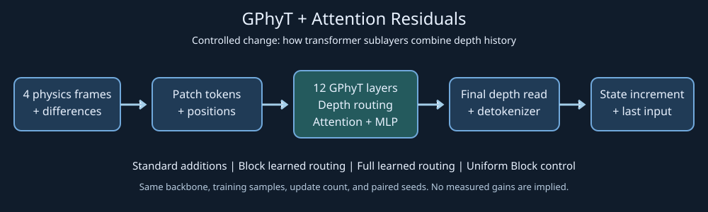

Loading published measurements…
Primary result: the matched baseline comparison
| Model | Finite/planned seeds | Convection 12-step NMSE ↓ | Radiative-layer 12-step NMSE ↓ |
|---|
Arithmetic means across the same six seeds. The headline reduction uses paired dataset log-error ratios, not the ratio of these means. Both models use 3,175 updates and effective batch 16; GPU time differs. “Without Attention Residuals” retains the original additive residuals and transformer self-attention. Download all six baseline checkpoints ↗
What the result means
Block improves the paired error endpoint over GPhyT without Attention Residuals, but every trained variant is much worse than persistence on convection under the fixed metric. Radiative forecasts frequently produce negative density. All held-out trajectories share an initial frame with training at another parameter setting. These results do not establish a reliable solver or unseen-initial-condition generalization. Read the measured interpretation and limitations ↗
Same physics fields, every trained model
Seed 0, first test trajectory/window, forecast step 12. Top: convection buoyancy (not temperature); bottom: radiative-layer density. Each row shares one color scale spanning truth and every prediction, without clipping, in training-standardized units. This post-result layout reuses the already fixed preview cases. Explore all 24 frames below.
The controlled change

Same backbone initialization and sampled examples within each seed; standard, block, full, and fixed uniform routing. All runs use one frozen optimizer-update count.
Prediction errors & uncertainty
NMSE averages active fields and forecast steps, then windows within trajectories, then trajectories within each dataset. Lower is better. Each point is one seed, not an independent frame.
Training & cost
Routing interventions
These comparisons use the same diagnostic trajectories and the same trained Block model. They change routing weights without retraining.
Predicted fields
Predetermined first test trajectory and first window, seed 0. Public previews show buoyancy for convection or density for radiative flow; full active-field inspection is available in the local dashboard.
Both panels use the same target-derived color scale in training-standardized units. Missing/nonfinite values remain blank; they are not replaced with plausible fields.
What could six pairs detect?
This is a prospective sensitivity calculation under hypothetical Gaussian seed effects. It is not measured physics accuracy.
All planned experiments
| Experiment | Status | Completed updates | GPU-phase hours |
|---|